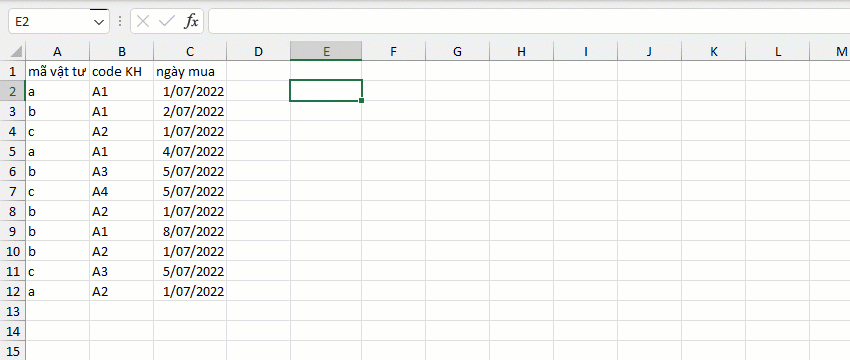
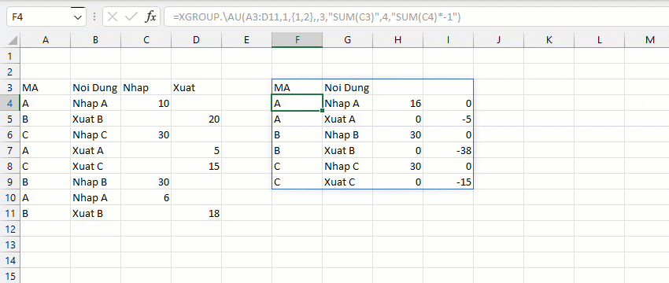
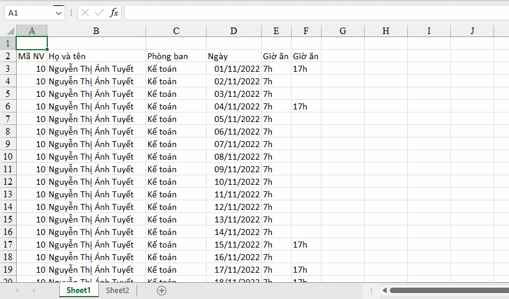

VD1: Thống kê số loại mặt hàng mua bởi mỗi khách hàng theo từng tháng.
VD2: Tính tổng số lượng nhập, xuất theo từng mã hàng.
VD3: Đếm tổng số lượt ăn của mỗi nhân viên dựa trên mỗi khung giờ.
- Khai báo các biến lần lượt theo thứ tự xuất hiện (vd: v3=v1+v2 thì cần khai báo các biến v1,v2 trước v3). - Danh sách biến có thể khai báo dạng mảng thay vì chuỗi. - Hàm này thường được sử dụng khi việc tính toán giữa các cột có mối liên hệ với nhau do đó yêu cầu cú pháp chặt chẽ so với hàm GROUP. - Hỗ trợ nhiều hàm nâng cao so với hàm GROUP. - Để hiểu cách sử dụng hàm xem thêm các ví dụ .XLSX từ DROPBOX.
- SUM [vd: sum(c1,2,3)] - MEDIAN [vd: median(c1,2,3)] - MAX/MIN/AVERAGE [vd: max(c1,c2,c5)] - PRODUCT/DIVIDE [áp dụng đối với biến: product(c1,c5) thay vì c1*c5] - CELL [vd: cell(c1) tương ứng index(c1,1)] - COUNT/COUNTA/COUNTNIL/COUNTBLANK [áp dụng đếm số/đếm không trống/đếm trống/đếm trống và chuỗi trống] - COUNTUNIQUE [vd: countunique(c1) đếm số giá trị duy nhất trên cột c1] - COUNTUNIQUEROWS [vd: countuniquerows(c1) đếm hàng duy nhất trong chính phân nhóm đó] - MAXIF/MINIF/COUNTIF/SUMIF/AVERAGEIF/PRODUCTIF [vd: maxif(c1,'>5') hoặc maxif(c1,'>0',c2)] - ROW [vd: v=max(c1), r=row(v) chỉ áp dụng với các biến tồn tại thuộc tính ROW như max,min,first,last] - INDEX/MATCH [vd: index(c1,5), match('a',c2,0) [tham số cuối >0 (tìm trên xuống) hoặc <0 (tìm dưới lên)] - FIRST/LAST [vd: first(c1)] - TAKE/DROP [vd: take(c1,5) hoặc drop(c1,-5)] - UNIQUE/SORT [vd: unique(c1), sort(c1,1) [tham số cuối sắp xếp >0 (tăng dần) <0 (giảm dần)] - LEN [vd: len(c1)] - JOIN/JOINIF [vd: join(',',,c1) hoặc joinif(',',,'>5',c1)] - MID/LEFT/RIGHT/TEXTBEFORE/TEXTAFTER [vd: textbefore(c1,'abc')] - TRIM/REPLACE/QUOTE [vd: replace(c1,'a','b') hoặc quote(c1)] - UPPER/LOWER/PROPER/SENTENCE [vd: upper(c1)] - ABS/ROUND/ROUNDUP/ROUNDDOWN/CEILING [vd: round(c1,2) làm tròn 2 chữ số thập phân]
Related function
GROUP Phân nhóm bảng dữ liệu dựa trên trường (cột) chỉ định. (hỗ trợ các hàm nâng cao).
XGROUPBY Hàm mở rộng của GROUPBY. (hỗ trợ các hàm nâng cao).
Return to Home